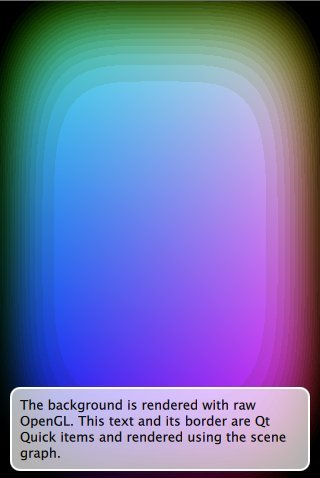

OpenGL Under QML
Shows how to render OpenGL under a Qt Quick scene.

The OpenGL under QML example shows how an application can make use of the QQuickWindow::beforeRendering() signal to draw custom OpenGL content under a Qt Quick scene. This signal is emitted at the start of every frame, before the scene graph starts its rendering, thus any OpenGL draw calls that are made as a response to this signal, will stack under the Qt Quick items.
As an alternative, applications that wish to render OpenGL content on top of the Qt Quick scene, can do so by connecting to the QQuickWindow::afterRendering() signal.
In this example, we will also see how it is possible to have values that are exposed to QML which affect the OpenGL rendering. We animate the threshold value using a NumberAnimation in the QML file and this value is used by the OpenGL shader program that draws the squircles.
First of all, we need a QObject with a slot to connect the signals to. We subclass QQuickItem in order to use the QQuickItem::window() which holds the window instance we want to connect to.
We use two values of t. The variable m_t is the property value as it exists in the GUI thread. The m_thread_t value is a copy of m_t for use in the rendering thread. We need an explicit copy because the scene graph can render in one thread while updating properties on the GUI thread in preparation for the next frame. If we had used only one value, the animation could have updated the value to that of the next frame before we got a chance to render it.
Note: In this example, a wrong value for t will have minimal consequences, but we emphasize that rendering and GUI thread objects and values must stay separate to avoid race conditions, undesired behavior and in the worst case, crashes.
Lets move on to the implementation.
The constructor of the Squircle class simply initializes the values. The shader program will be initialized during rendering later.
The property setter checks that the value has indeed changed before updating its internal variable. It then calls QQuickWindow::update() which will trigger another frame to be rendered. Note that the setter might be called during initialization, before the object has been entered into the scene and before it has a window.
For our paint function to be called, we need to connect to the window's signals. When Squircle object is populated into the scene, the itemChange function is called with the change type ItemSceneChange. We connect QQuickWindow::beforeRendering() to paint() to do the rendering, and QQuickWindow::beforeSynchronizing() to sync() to copy the state of the t property for the upcoming frame.
Note: Since the Squircle object has affinity to the GUI thread and the signals are emitted from the rendering thread, it is crucial that the connections are made with Qt::DirectConnection. Failing to do so, will result in that the slots are invoked on the wrong thread with no OpenGL context present.
The default behavior of the scene graph is to clear the framebuffer before rendering. Since we render before the scene graph, we need to turn this clearing off. This means that we need to clear ourselves in the paint() function.
The first thing we do in the paint() function is to initialize the shader program. By initializing the shader program here, we make sure that the OpenGL context is bound and that we are on the correct thread.
We also connect to the QOpenGLContext::aboutToBeDestroyed() signal, so that we can clean up the shader program when the context is destroyed. Again, this is a Qt::DirectConnection as all rendering related operations must happen on the rendering thread.
We use the shader program to draw the squircle. At the end of the paint function we release the program and disable the attributes we used so that the OpenGL context is in a "clean" state for the scene graph to pick it up.
In the cleanup() function we delete the program.
We use the sync() function to copy the state of the object in the GUI thread into the rendering thread.
The signal is emitted on the rendering thread while the GUI thread is blocked, so it is safe to simply copy the value without any additional protection.
The application's main() function instantiates a QQuickView and launches the main.qml file. The only thing worth noting is that we export the Squircle class to QML using the qmlRegisterType() macro.
We import the Squircle QML type with the name we registered in the main() function. We then instantiate it and create a running NumberAnimation on the its t property.
Then we overlay a short descriptive text, so that it is clearly visible that we are in fact rendering OpenGL under our Qt Quick scene.
Files: